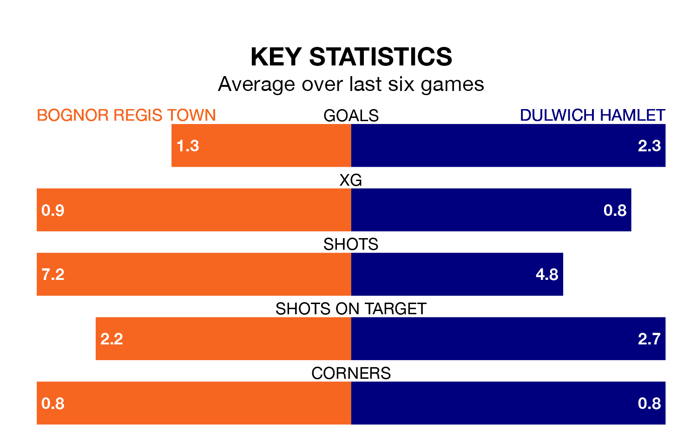

Dulwich Hamlet face a challenge to maintain their high-scoring form away against a tight Bognor Regis Town defence on Saturday.
With 64 goals in 33 games, Dulwich Hamlet are the joint-third-highest scorers in the Isthmian Premier Division ahead of the 3pm kick-off at Nyewood Lane.
They face a Bognor Regis side who have scored 52 in 32 matches, but conceded only 43 goals, putting them joint-third among the league's tightest defences – only AFC Hornchurch and Horsham have conceded fewer goals.
In the last 10 years, Bognor Regis and Dulwich Hamlet have played each other on 10 occasions. They won four each, and they drew twice.
On average, Bognor Regis scored 1.5 goals and Dulwich Hamlet 1.6 in those matches.
Their last meeting was on December 2, when they played out a 1-1 draw.
Bognor Regis are in mixed form in the Isthmian Premier Division, with two wins and two draws from their last six games.
With four wins and a draw over that period, Dulwich Hamlet's form is better – they have taken 13 points from 18, compared to Town's eight.
The away side are eighth in the table after 33 games, of which they have won 14 and drawn 10, earning 52 points.
The hosts are two places behind Dulwich Hamlet in 10th, with 13 wins and 11 draws putting them on 50 points.
Bognor Regis's last match was on March 16, a 1-0 win against Wingate and Finchley.
Dulwich Hamlet beat Lewes 2-0 last time out, also on March 16.
Updated: 10:19 (UTC), 22/03/24